网页前端设计与开发
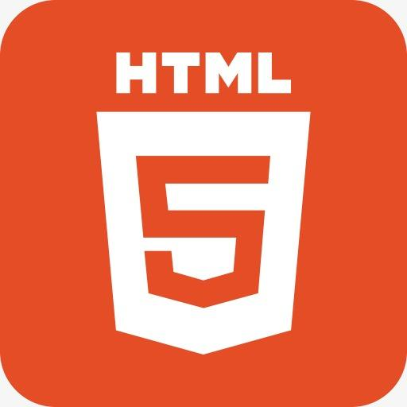
HTML HTML，即超文本标记语言(HyperText Markup Language)，是一种用于创建网页的标准标记语言。
HTML运行在浏览器上，由浏览器来解析
目前HTML的最新标准为HTML5
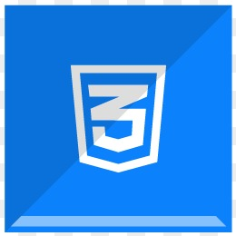
CSS CSS，即层叠样式表(Cascading Style Sheets)，是一种用于表现HTML样式的语言
CSS 能够对网页中元素位置的排版进行像素级精确控制，支持几乎所有的字体字号样式，拥有对网页对象和模型样式编辑的能力。
目前CSS的最新标准为CSS3
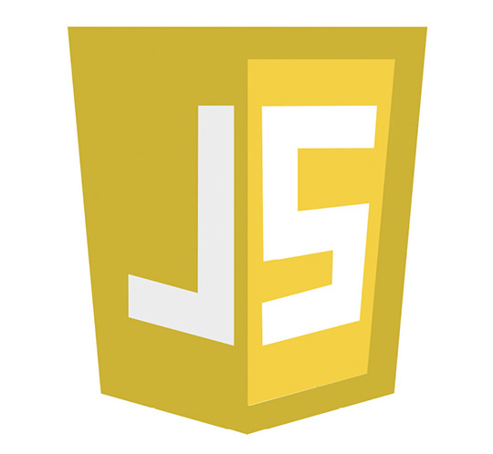
JavaScript JavaScript（通常缩写为JS）是一种高级的、解释型的编程语言。
JavaScript是一门基于原型、头等函数的语言，是一门多范式的语言，它支持面向对象程式设计，命令式编程，以及函数式编程。它提供语法来操控文本、数组、日期以及正则表达式等。
它被世界上的绝大多数网站所使用，也被世界主流浏览器（Chrome、IE、Firefox、Safari、Opera）支持。
游戏开发
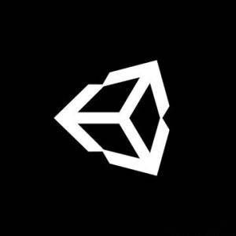
Unity Unity是由Unity Technologies研发的跨平台2D/3D游戏引擎，可用于开发Windows、MacOS及Linux平台的单机游戏，PlayStation、Xbox、Wii、任天堂3DS和Switch 等游戏主机平台的视频游戏，以及iOS、Android等移动设备的游戏。
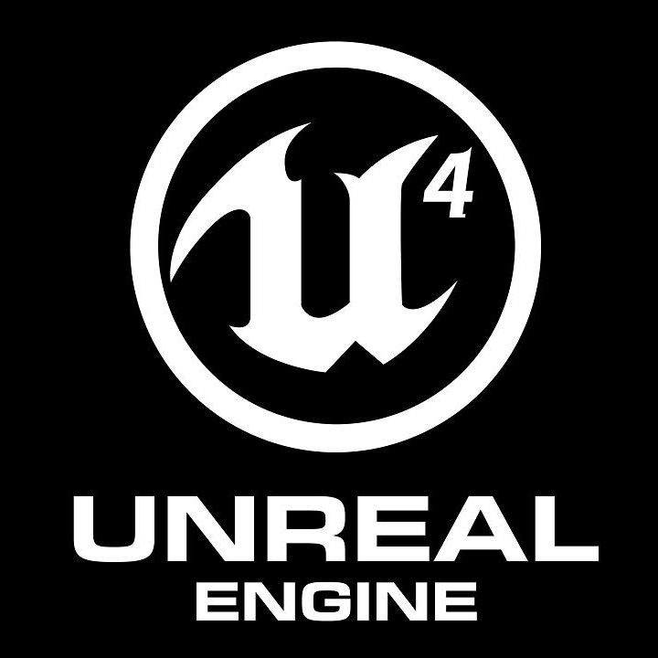
Unreal Engine 虚幻引擎（Unreal Engine）是一款由Epic Games开发的游戏引擎。该引擎主要是为了开发第一人称射击游戏而设计，但现在已经被成功地应用于开发潜行类游戏、格斗游戏、角色扮演游戏等多种不同类型的游戏。
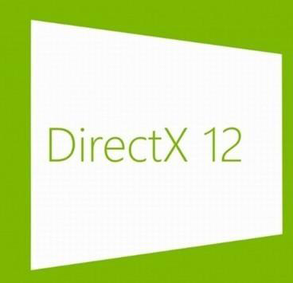
DirectX DirectX（Direct eXtension，缩写：DX）是由微软公司创建的一系列专为多媒体以及游戏开发的应用程序接口。旗下包含Direct3D、Direct2D、DirectCompute等等多个不同用途的子部分，因为这一系列API皆以Direct字样开头，所以DirectX（只要把X字母替换为任何一个特定API的名字）就成为这一巨大的API系列的统称。目前最新版本为DirectX 12，随附于Windows 10操作系统之上。
服务端
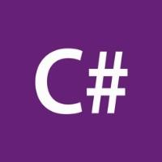
C# C#是微软推出的一种基于.NET框架的、面向对象的高级编程语言。C#是一种由C和C++派生出来的面向对象的编程语言。它在继承C和C++强大功能的同时去掉了一些它们的复杂特性，使其成为C语言家族中的一种高效强大的编程语言。C#以.NET框架类库作为基础，拥有类似Visual Basic的快速开发能力。微软在2000年发布了这种语言，希望借助这种语言来取代Java。C#已经成为Ecma国际和国际标准组织的标准规范。
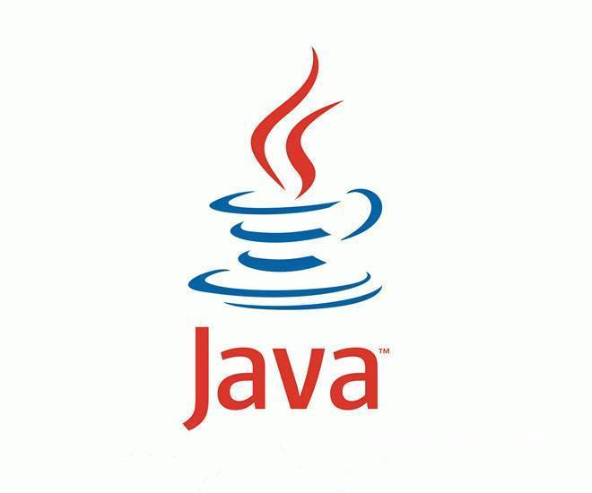
Java Java是一种广泛使用的计算机编程语言，拥有跨平台、面向对象、泛型编程的特性，广泛应用于企业级Web应用开发和移动应用开发。
Sun公司在推出Java时就将其作为开放的技术。全球的Java开发公司被要求所设计的Java软件必须相互兼容。后来Sun公司被甲骨文公司并购，Java也随之成为甲骨文公司的产品。
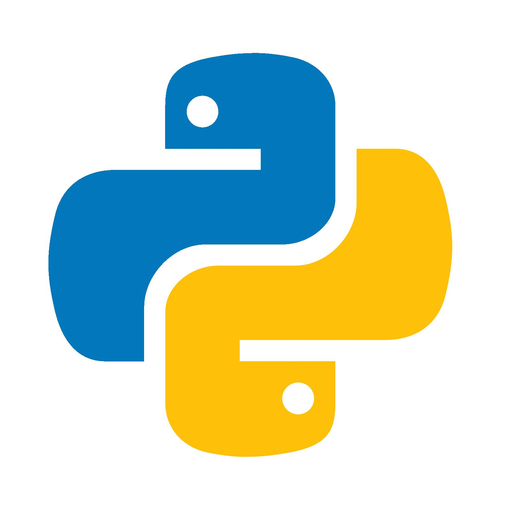
Python Python是一种广泛使用的解释型、高级和通用的编程语言。Python支持多种编程范型，包括函数式、指令式、结构化、面向对象和反射式编程。它拥有动态类型系统和垃圾回收功能，能够自动管理内存使用，并且其本身拥有一个巨大而广泛的标准库。
ASP.NET ASP.NET是由微软在.NET Framework框架中所提供，开发Web应用程序的类别库，并提供ASP.NET网页处理、扩展以及HTTP通道的应用程序与通信处理等工作，以及Web Service的基础架构。ASP.NET是ASP技术的后继者，但它的发展性要比ASP技术要强大许多。
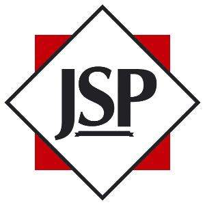
JSP JSP（全称Jakarta Server Pages，曾称为JavaServer Pages）是由Sun Microsystems公司主导创建的一种动态网页技术标准。JSP部署于网络服务器上，可以响应客户端发送的请求，并根据请求内容动态地生成HTML、XML或其他格式文档的Web网页，然后返回给请求者。JSP技术以Java语言作为脚本语言，为用户的HTTP请求提供服务，并能与服务器上的其它Java程序共同处理复杂的业务需求。
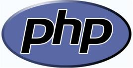
PHP PHP（Hypertext Preprocessor）即超文本预处理器是一种开源的通用计算机脚本语言，尤其适用于网络开发并可嵌入HTML中使用。PHP的语法借鉴吸收C语言、Java和Perl等流行计算机语言的特点，易于一般程序员学习。PHP的主要目标是允许网络开发人员快速编写动态页面，但PHP也被用于其他很多领域。
数据库
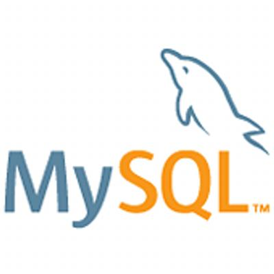
MySQL MySQL（官方发音为/maɪ ˌɛskjuːˈɛl/“My S-Q-L”，但也经常被错误读作/maɪ ˈsiːkwəl/“My Sequel”）原本是一个开放源码的关系数据库管理系统，原开发者为瑞典的MySQL AB公司，该公司于2008年被昇阳微系统（Sun Microsystems）收购。2009年，甲骨文公司（Oracle）收购昇阳微系统公司，MySQL成为Oracle旗下产品。
UI与软件开发
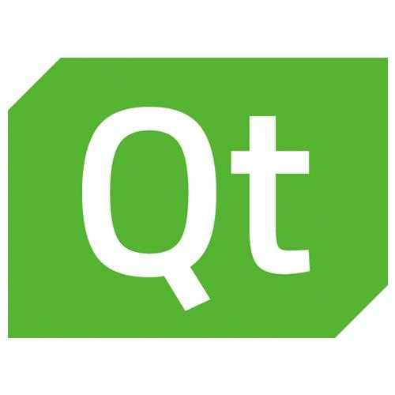
Qt Qt（/ˈkjuːt/，发音同“cute”）是一个跨平台的C++应用程序开发框架。广泛用于开发GUI程序，这种情况下又被称为部件工具箱。也可用于开发非GUI程序，比如控制台工具和服务器。
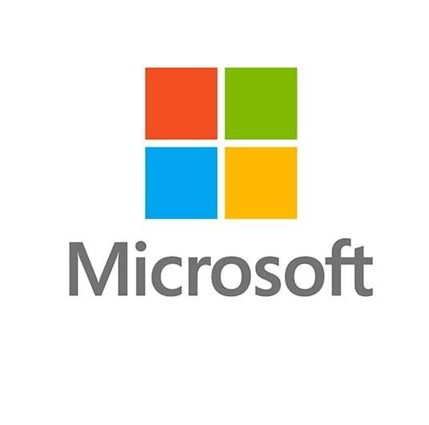
MFC 微软基础类库（Microsoft Foundation Classes，简称MFC）是一个微软公司提供的类库，以C++类的形式封装了Windows API，并且包含一个（也是微软产品的唯一一个）应用程序框架，以减少应用程序开发人员的工作量。其中包含的类包含大量Windows句柄封装类和很多Windows的内建控件和组件的封装类。
WinForm & WPF WinForm为.NET Framework中的一个GUI库，其中包含了窗体设计工具，并支持许多窗体设计所需的控件。
而Windows Presentation Foundation（WPF）是微软公司推出.NET Framework 3.0及以后版本的组成部分之一，它是一套基于XML、.NET Framework、向量绘图技术的展示层开发框架，微软视其为下一代用户界面技术，广泛被用于Windows Vista的界面开发。